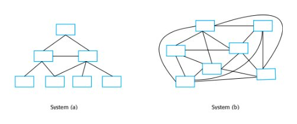
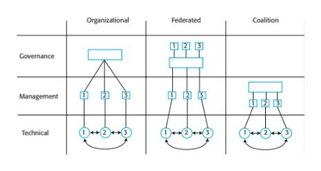
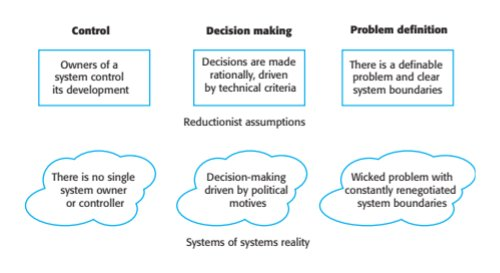
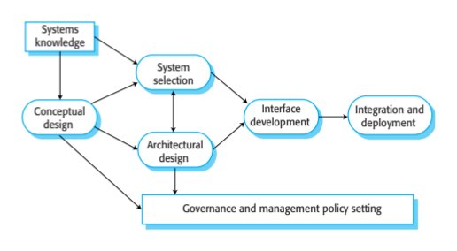
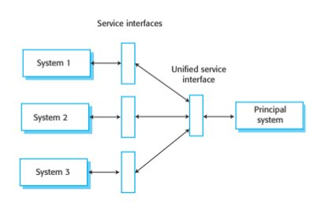
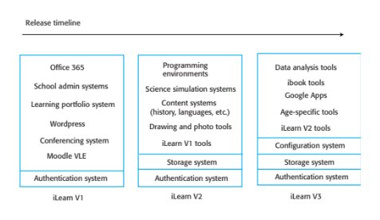
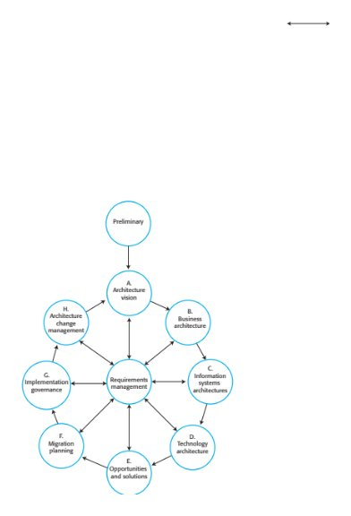
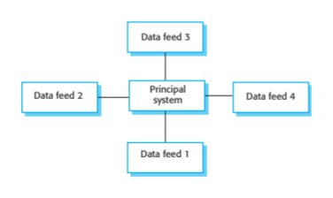
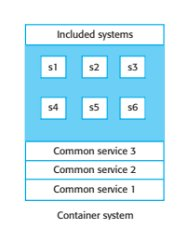
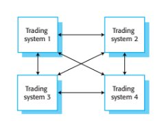

Chapter 20 · Systems of Systems
Source review
The original source text, examples, tables and caveats remain available. Source slide numbers and textbook PDF pages are different references. Historical assertions stay attributed to this edition; this page is not a current legal, medical, regulatory or product guide. Classroom activities are labelled separately.
Required selections
- SoS classification and independence: original slides 15–20
- Data feeds and architecture patterns: original slides 48–53
Apply one named source concept to the chapter artifact and explain its effect. Finish any uncompleted core topic here; material does not become optional merely because it is reviewed after class. Assignment dates and marks remain in Blackboard.
Original source-slide ledger
Slide 1 · Chapter 20 – Systems of Systems
Slide 2 · Topics covered
Topics covered System complexity System of systems classification Reductionism and complex systems Systems of systems engineering Systems of systems architecture
Slide 3 · Systems of systems
Systems of systems More and more systems are being constructed by integrated existing, independent systems A system of systems is a system that contains two or more independently managed elements. There is no single manager for all of the parts of the system of systems and that different parts of a system are subject to different management and control policies and rules.
Slide 4 · Examples of systems of systems
Examples of systems of systems A cloud management system that handles local private cloud management and management of servers on public clouds such as Amazon and Microsoft. An online banking system that handles loan requests and which connects to a credit reference system provided by credit reference agency to check the credit of applicants. An emergency information system that integrates information from police, ambulance, fire and coastguard services about the assets available to deal with civil emergencies such as flooding and large-scale accidents.
Slide 5 · Essential characteristics of SoS
Essential characteristics of SoS Operational independence of system elements Managerial independence of system elements Evolutionary development Emergence of system characteristics Geographic distribution of system elements Data intensive (data >> code) Heterogeneity
Slide 6 · System complexity
System complexity
Slide 7 · Complexity
Complexity All systems are composed of parts (elements) with relationships between these elements of the system. For example, the parts of a program may be objects and the parts of each object may be constants, variables and methods. Examples of relationships include ‘calls’ (method A calls method B), ‘inherits-from’ (object X inherits the methods and attributes of object Y) and ‘part of’ (method A is part of object X). The complexity of any system depends on the number and the types of relationships between system elements. The type of relationship (static or dynamic) also influences the overall complexity of a system.
Slide 8 · Simple and complex systems
Simple and complex systems
Slide 9 · Process complexity
Process complexity As systems grow in size, they need more complex production and management processes. Complex processes are themselves complex systems. They are difficult to understand and may have undesirable emergent properties. They are more time consuming than simpler processes and they require more documentation and coordination between the people and the organizations involved in the system development. The complexity of the production process is one of the main reasons why projects go wrong, with software delivered late and over-budget.
Slide 10 · System production and management processes
System production and management processes
Slide 11 · Complexity and software engineering
Complexity and software engineering Complexity is important for software engineering because it is the main influence on the understandability and the changeability of a system. The more complex a system, the more difficult it is to understand and analyze. As complexity increases, there are more and more relationships between elements of the system and an increased likelihood that changing one part of a system will have undesirable effects elsewhere.
Slide 12 · Types of complexity
Types of complexity Technical complexity is derived from the relationships between the different components of the system itself. Managerial complexity is derived from the complexity of the relationships between the system and its managers and the relationships between the managers of different parts of the system. Governance complexity of a system depends on the relationships between the laws, regulations and policies that affect the system and the relationships between the decision-making processes in the organizations responsible for the system.
Slide 13 · System characteristics and complexity
System characteristics and complexity
Slide 14 · Complexity and project failure
Complexity and project failure Large-scale systems of systems are now unimaginably complex entities that cannot be understood or analyzed as a whole. The large number of interactions between the parts and the dynamic nature of these interactions means that conventional engineering approaches do not work well for complex systems. It is complexity that is the root cause of problems in projects to develop large software-intensive systems, not poor management or technical failings.
Slide 15 · Systems of systems classification
Systems of systems classification
Slide 16 · Maier’s classification of systems of systems
Maier’s classification of systems of systems Directed SoS are owned by a single organization and are developed by integrating systems that are also owned by that organization. The system elements may be independently managed by parts of the organization. Collaborative SoS are systems where there is no central authority to set management priorities and resolve disputes. Typically, elements of the system are owned and governed by different organizations. Virtual systems have no central governance and the participants may not agree on the overall purpose of the system. Participant systems may enter or leave the SoS.
Slide 17 · More intuitive classification terms
More intuitive classification terms Organizational systems of systems are SoS where the governance and management of the system lies within the same organization or company. Federated systems are SoS where the governance of the SoS depends on a voluntary participative body in which all of the system owners are represented. System of system coalitions are SoS where there are no formal governance mechanisms but where the organizations involved informally collaborate and manage their own systems to maintain the system as a whole.
Slide 18 · System of systems classification
System of systems classification
Slide 19 · iLearn as a SoS
iLearn as a SoS iLearn is a relatively simple technical system but it has a high level of governance complexity. The development of a digital learning system is a national initiative but to create a digital learning environment, it has to be integrated with network management and school administration systems. There is no common governance process across authorities so, according to the classification scheme, this is a coalition of systems.
Slide 20 · Reductionism and complex systems
Reductionism and complex systems
Slide 21 · Complexity management in engineering
Complexity management in engineering The approach that has been the basis of complexity management in software engineering is called reductionism. Reductionism is based on the assumption that any system is made up of parts or subsystems. It assumes that the behaviour and properties of the system as a whole can be understood and predicted by understanding the individual parts and the relationships between these parts. To design a system, the parts making up that system are identified, constructed separately and then assembled into the complete system.
Slide 22 · Software engineering methods
Software engineering methods A reductionist approach has been the basis of software engineering for almost 50 years. Top-down design, where you start with a very high-level model of a system and break this down to its components is a reductionist approach. This is the basis of all software design methods, such as object-oriented design. Programming languages include abstractions, such as procedures and objects that directly reflect reductionist system decomposition. Agile methods are also reductionist. The difference between agile methods and top-down design is that system decomposition is incremental when an agile approach is used.
Slide 23 · Reductionist methods
Reductionist methods Reductionist methods are successful when there are relatively few relationships between the parts of a system and it is possible to model these relationships. Software engineering methods attempt to limit complexity by controlling the relationships between parts of the system. Reductionism does not work well when there are many relationships in a system and when these relationships are difficult to understand and analyze. The fundamental assumptions that are inherent to reductionism are inapplicable for large and complex systems
Slide 24 · Reductionist assumptions
Reductionist assumptions System ownership and control Reductionism assumes that there is a controlling authority for a system that can resolve disputes and make high-level technical decisions that will apply across the system. Rational decision making Reductionism assumes that interactions between components can be objectively assessed by, for example, mathematical modelling. Defined system boundaries Reductionism assumes that the boundaries of a system can be agreed and defined.
Slide 25 · System of systems reality
System of systems reality
Slide 26 · Reductionism and software SoS
Reductionism and software SoS Relationships in software systems are not governed by physical laws. Political factors are usually the driver of decision making for large and complex software systems. Software has no physical limitations hence there are no limits on where the boundaries of a system are drawn. The boundaries and the scope of a system are likely to change during its development. Linking software systems from different owners is relatively easy hence we are more likely to try and create a SoS where there is no single governing body.
Slide 27 · Systems of systems engineering
Systems of systems engineering
Slide 28 · SoS engineering problems
SoS engineering problems Lack of control over system functionality and performance. Differing and incompatible assumptions made by the developers of the different systems. Different evolution strategies and timetables for the different systems. Lack of support from system owners when problems arise.
Slide 29 · Systems of systems engineering
Systems of systems engineering
Slide 30 · SoS development processes
SoS development processes Conceptual design is the activity of creating a high-level vision for a system, defining essential requirements and identifying constraints on the overall system. System selection, where a set of systems for inclusion in the SoS is chosen. Political imperatives and issues of system governance and management are often the key factors that influence what systems are included in a SoS. Architectural design where an overall architecture for the SoS is developed.
Slide 31 · SoS development processes
SoS development processes Interface development – the development of system interfaces so that the constituent systems can interoperate. Integration and deployment – making the different systems involved in the SoS work together and interoperate through the developed interfaces. System deployment means putting the system into place in the organizations concerned and making it operational.
Slide 32 · Interface development
Interface development In general, the aim in SoS development is for systems to be able to communicate directly with each other without user intervention. Service interfaces If systems in a SoS have service interfaces, they can communicate directly via these interfaces The constituent systems in a SoS often have their own specialized API or only allow their functionality to be accessed through their user interfaces. You therefore have to develop software that reconciles the differences between these interfaces.
Slide 33 · Service interface development
Service interface development To develop service-based interfaces, you have to examine the functionality of existing systems and define a set of services to reflect that functionality. The services are implemented either by calls to the underlying system API or by mimicking user interaction with the system. A principal system acts as a service broker, directing service calls between the different systems in the SoS. Each system therefore does not need to know which other system is providing a called service.
Slide 34 · Service interfaces
Service interfaces
Slide 35 · Unified user interfaces
Unified user interfaces User interfaces for each system in a SoS are likely to be different. A principal system must have some overall user interfaces that handles user authentication and provides access to the features of the underlying system. It is usually expensive and time-consuming to implement a unified user interface to replace the individual interfaces of the underlying systems.
Slide 36 · Cost-effectiveness of UI development
Cost-effectiveness of UI development The interaction assumptions of the systems in the SoS If systems have different interaction models, unifying these in a single UI is very difficult The mode of use of the SoS A unified UI slows down interaction if most of the interaction is with a principal system in the SoS The ‘openness’ of the SoS If the SoS is open, so that new systems may be added to it when it is in use, then unified UI development is impractical.
Slide 37 · Integration and deployment
Integration and deployment For SoS, it makes sense to consider integration and deployment to be part of the same process. Separate integration may be difficult as some of the systems in the SoS may already be in use The integration process should begin with systems that are already deployed, with new systems added to the SoS to provide coherent additions to the functionality of the overall system.
Slide 38 · Staged deployment of the iLearn system
Staged deployment of the iLearn system The initial deployment provides authentication, basic learning functionality and integration with school administration systems. Stage 2 adds an integrated storage system and a set of more specialized tools to support subject-specific learning. Stage 3 adds features for user configuration and the ability for users to add new systems to the iLearn environment.
Slide 39 · iLearn releases
iLearn releases
Slide 40 · SoS testing
SoS testing There are three reasons why testing systems of systems is difficult and expensive: There may not be a detailed requirements specification that can be used as a basis for system testing. It may not be cost effective to develop a SoS requirements document – the details of the system functionality are defined by the systems included. The constituent systems may change in the course of the testing process so tests may not be repeatable. If problems are discovered, it may not be possible to fix the problems by requiring one of more of the constituent systems to be changed. Intermediate software may have to be introduced to solve the problem.
Slide 41 · SoS testing and agile testing
SoS testing and agile testing Agile methods do not rely on having a complete system specification for system acceptance testing. Stakeholders are engaged with the testing process and to decide when the overall system is acceptable. For SoS, a range of stakeholders should be involved in the testing process if possible and they can comment on whether or not the system is ready for deployment. Agile methods make extensive use of automated testing. This makes it much easier to rerun tests to discover if unexpected system changes have caused problems for the SoS as a whole.
Slide 42 · Systems of systems architecture
Systems of systems architecture
Slide 43 · General principles for architecting SoS
General principles for architecting SoS Design systems so that they can deliver value if they are incomplete. Be realistic about what can be controlled. Focus on the system interfaces. Provide collaboration incentives. Design a SoS as node and web architecture. Specify behaviour as services exchanged between nodes. Understand and manage system vulnerabilities.
Slide 44 · Architectural frameworks
Architectural frameworks Architectural frameworks such as MODAFand TOGAF have been suggested as a means to support the architectural design of systems of systems. An architecture framework recognises that a single model of an architecture does not present all of the information needed for architectural and business analysis. Frameworks propose a number of architectural views that should be created and maintained to describe and document enterprise systems.
Slide 45 · TOGAF
TOGAF The TOGAF framework has been developed by the Open Group as an open standard and is intended to support the design of a business architecture, a data architecture, an application architecture and a technology architecture for an enterprise. At its heart is the Architecture Development Method (ADM), which consists of a number of discrete phases.
Slide 46 · TOGAF – Architecture Development Method
TOGAF – Architecture Development Method
Slide 47 · Architectural model management
Architectural model management Initial model development takes a long time and involves extensive negotiations between system stakeholders. This slows the development of the overall system. It is time-consuming and expensive to maintain model consistency as changes are made to the organization and the constituent systems in a SoS.
Slide 48 · Architectural patterns for SoS
Architectural patterns for SoS An architectural pattern is a stylized architecture that can be recognized across a range of different systems. Architectural patterns are a useful way of stimulating discussions about the most appropriate architecture for a system and for documenting and explaining the architectures used.
Slide 49 · Systems as data feeds
Systems as data feeds There is a principal system that requires data of different types. This data is available from other systems and the principal system queries these systems to get the data required. Generally, the systems that provide data do not interact with each other. This pattern is often observed in organizational or federated systems where some governance mechanisms are in place.
Slide 50 · Systems as data feeds
Systems as data feeds
Slide 51 · Systems as data feeds
Systems as data feeds The ‘systems as data feeds’ architecture is an appropriate architecture to use when it is possible to identify entities in a unique way and create relatively simple queries about these entities. A variant of the ‘systems as data feeds’ architecture arises when there are a number of systems involved which provide similar data but which are not identical. The architecture has to include an intermediate layer to translate the general query from the principal system into the specific query required by the individual information system.
Slide 52 · Systems as data feeds with unifying interface
Systems as data feeds with unifying interface
Slide 53 · Systems in a container
Systems in a container Systems in a container are systems of systems where one of the systems acts as a virtual container and provides a set of common services such as an authentication and a storage service. Conceptually, other systems are then placed into this container to make their functionality accessible to system users. You don’t place systems into a real container to implement these systems of systems. Rather, for each approved system, there is a separate interface that allows it to be integrated with the common services.
Slide 54 · Container systems
Container systems
Slide 55 · ILearn container: common services
ILearn container: common services An authentication service that provides a single sign-in to all approved systems. Users do not have to maintain separate credentials for these. A storage service for user data. This can be seamlessly transferred to and from approved systems. A configuration service that is used to include or remove systems from the container.
Slide 56 · iLearn as a container
iLearn as a container
Slide 57 · Container architecture problems
Container architecture problems A separate interface must be developed for each approved system so that common services can be used with these systems. This means that only a relatively small number of approved systems can be supported. The owners of the container system have no influence on the functionality and behaviour of the included systems. Systems may stop working or may be withdrawn at any time.
Slide 58 · Trading systems
Trading systems Trading systems are systems of systems where there is no single principal system but processing may take place in any of the constituent systems. The systems involved trade information amongst themselves. There may be one-to-one or one-to-many interactions between these systems. Each system publishes its own interface but there may not be any interface standards that are followed by all systems.
Slide 59 · Trading systems
Trading systems
Slide 60 · Trading SoS
Trading SoS Trading systems may be developed for any type of marketplace with the information exchanged being information about the goods being traded and their prices. While trading systems are systems in their own right and could conceivably be used for individual trading, they are most useful in an automated trading context where the systems negotiate directly with each other. The major problem with this type of system is that there is no governance mechanism so any of the systems involved may change at any time.
Slide 61 · Key points
Key points Systems of systems are systems where two or more of the constituent systems are independently managed and governed. There are three types of complexity that are important for systems of systems – technical complexity, managerial complexity and governance complexity. System governance can be used as the basis for a classification scheme for SoS. This leads to three classes of SoS namely organizational systems, federated systems and system coalitions.
Slide 62 · Key points
Key points Reductionism as an engineering method breaks down because of the inherent complexity of systems of systems. Reductionism assumes clear system boundaries, rational decision making and well-defined problems. None of these are true for systems of systems. The key stages of the SoS development process are conceptual design, system selection, architectural design, interface development and integration and deployment. Governance and management policies must be designed in parallel with these activities.
Slide 63 · Key points
Key points Architectural patterns for systems of systems are a means of describing and discussing typical architectures for SoS. Important patterns are systems as data feeds, systems in a container and trading systems.
Preserved original source illustrations
Select a figure to inspect it at its original size. The original PDF/PPTX retains its full layout and vector diagrams.










Supplied textbook chapter · complete text
The PDF remains authoritative for mathematical layout, figures and tables. Line wrapping and extraction artifacts may occur below; no textbook statement is replaced by a contemporary claim.
PDF page 1 · printed page 580
20
Systems of systems
Objectives
The objectives of this chapter are to introduce the idea of a system of
systems and to discuss the challenges of building complex systems of
software systems. When you have read this chapter, you will:
■ understand what is meant by a system of systems and how it
differs from an individual system;
■ understand systems of systems classification and the differences
between different types of systems of systems;
■ understand why conventional methods of software engineering
that are based on reductionism are inadequate for developing
systems of systems;
■ have been introduced to the systems of systems engineering
process and architectural patterns for systems of systems.
Contents
20.1 System complexity
20.2 Systems of systems classification
20.3 Reductionism and complex systems
20.4 Systems of systems engineering
20.5 Systems of systems architecturePDF page 2 · printed page 581
Chapter 20 ■ Systems of systems 581
We need software engineering because we create large and complex software
systems. The discipline emerged in the 1960s because the first attempts to build
large software systems mostly went wrong. Creating software was much more
expensive than expected, took longer than planned, and the software itself was often
unreliable. To address these problems, we have developed a range of software engi-
neering techniques and technologies, which have been remarkably successful. We
can now build systems that are much larger, more complex, much more reliable, and
more effective than the software systems of the 1970s.
However, we have not “solved” the problems of large system engineering.
Software project failures are still common. For example, there have been serious
problems and delays in the implementation of government health care systems in
both the United States and the UK. The root cause of these problems is, as it was in
the 1960s, that we are trying to build systems that are larger and more complex than
before. We are attempting to build these “mega-systems” using methods and tech-
nology that were never designed for this purpose. As I discuss later in the chapter, I
believe that current software engineering technology cannot scale up to cope with
the complexity that is inherent in many of the systems now being proposed.
The increase in size of software systems since the introduction of software engi-
neering has been remarkable. Today’s large systems may be a hundred or even a
thousand times larger than the “large” systems of the 1960s. Northrop and her col-
leagues (Northrop et al. 2006) suggested in 2006 that we would shortly see the
development of systems with a billion lines of code. Almost 10 years after this pre-
diction, I suspect such systems are already in use.
Of course, we do not start with nothing and then write a billion lines of code. As
I discussed in Chapter 15, the real success story of software engineering has been
software reuse. It is only because we have developed ways of reusing software
across applications and systems that large-scale development is possible. Very large-
scale systems now and in the future will be built by integrating existing systems
from different providers to create systems of systems (SoS).
What do we mean when we talk about a system of systems? As Hitchens says
(Hitchins 2009), from a general systems perspective, there is no difference between
a system and a system of systems. Both have emergent properties and can be com-
posed from subsystems. However, from a software engineering perspective, I think
there is a useful distinction between these terms. This distinction is sociotechnical
rather than technical:
A system of systems is a system that contains two or more independently
managed elements.
This means that there is no single manager for all of the parts of the system of
systems and that different parts of a system are subject to different management and
control policies and rules. As we shall see, distributed management and control has
a profound effect on the overall complexity of the system.
This definition of systems of systems says nothing about the size of systems of
systems. A relatively small system that includes services from different providers isPDF page 3 · printed page 582
582 Chapter 20 ■ Systems of systems
a system of systems. Some of the problems of SoS engineering apply to such small
systems, but the real challenges emerge when the constituent systems are themselves
large-scale systems.
Much of the work in the area of systems of systems has come from the defense
community. As the capability of software systems increased in the late 20th century,
it became possible to coordinate and control previously independent military
systems, such as naval and ground-based air and ship defense systems. The system
might include tens or hundreds of separate elements, with software systems keeping
track of these elements and providing controllers with information that allows them
to be deployed most effectively.
This type of system of systems is outside the scope of a software engineering
book. Instead, I focus here on systems of systems where the system elements are
software systems rather than hardware such as aircraft, military vehicles, or radars.
Systems of software systems are created by integrating separate software systems,
and, at the time of writing, most software SoS include a relatively small number of
separate systems. Each constituent system is usually a complex system in its own
right. However, it is predicted that, over the next few years, the size of software SoS
is likely to grow significantly as more and more systems are integrated to make use
of the capabilities that they offer.
Examples of systems of systems of software systems are:
1. A cloud management system that handles local private cloud management and
management of servers on public clouds such as Amazon and Microsoft.
2. An online banking system that handles loan requests and that connects to a
credit reference system provided by credit reference agencies to check the credit
of applicants.
3. An emergency information system that integrates information from police,
ambulance, fire, and coast guard services about the assets available to deal with
civil emergencies such as flooding and large-scale accidents.
4. The digital learning environment (iLearn) that I introduced in Chapter 1.
This system provides a range of learning support by integrating separate
software systems such as Microsoft Office 365, virtual learning environ-
ments such as Moodle, simulation modeling tools, and content such as
newspaper archives.
Maier (Maier 1998) identified five essential characteristics of systems of systems:
1. Operational independence of elements Parts of the system are not simply com-
ponents but can operate as useful systems in their own right. The systems within
the SoS evolve independently.
2. Managerial independence of elements Parts of the system are “owned” and man-
aged by different organizations or by different parts of a larger organization.
Therefore different rules and policies apply to the management and evolution ofPDF page 4 · printed page 583
Chapter 20 ■ Systems of systems 583
these systems. As I have suggested, this is the key factor that distinguishes a
system of systems from a system.
3. Evolutionary development SoS are not developed in a single project but evolve
over time from their constituent systems.
4. Emergence SoS have emergent characteristics that only become apparent after
the SoS has been created. Of course, as I have discussed in Chapter 19, emer-
gence is a characteristic of all systems, but it is particularly important in SoS.
5. Geographical distribution of elements The elements of a SoS are often geograph-
ically distributed across different organizations. This is important technically
because it means that an externally-managed network is an integral part of the
SoS. It is also important managerially as it increases the difficulties of communi-
cation between those involved in making system management decisions and adds
to the difficulties of maintaining system security.†
I would like to add two further characteristics to Maier’s list that are particularly
relevant to systems of software systems:
1. Data intensive A software SoS typically relies on and manages a very large
volume of data. In terms of size, this may be tens or even hundreds of times
larger than the code of the constituent systems itself.
2. Heterogeneity The different systems in a software SoS are unlikely to have been
developed using the same programming languages and design methods. This is
a consequence of the very rapid pace of evolution of software technologies.
Companies frequently update their development methods and tools as new,
improved versions become available. In a 20-year lifetime of a large SoS, tech-
nologies may change four or five times.
As I discuss in Section 20.1, these characteristics mean that SoS can be much
more complex than systems with a single owner and manager. I believe that our cur-
rent software engineering methods and techniques cannot scale to cope with this
complexity. Consequently, problems with the very large and complex systems that
we are now developing are inevitable. We need a completely new set of abstractions,
methods, and technologies for software systems of systems engineering.
This need has been recognized independently by a number of different authori-
ties. In the UK, a report published in 2004 (Royal Academy of Engineering 2004)
led to the establishment of a national research and training initiative in large-scale
complex IT systems (Sommerville et al. 2012). In the United States, the Software
Engineering Institute reported on Ultra-Large Scale Systems in 2006 (Northrop et al.
2006). From the systems engineering community, Stevens (Stevens 2010) discusses
the problems of constructing “mega-systems” in transport, health care, and defense.
†Maier, M. W. 1998. “Architecting Principles for Systems-of-Systems.” Systems Engineering 1 (4):
267–284. doi:10.1002/(SICI)1520-6858(1998)1:4<267::AID-SYS3>3.0.CO;2-D.PDF page 5 · printed page 584
584 Chapter 20 ■ Systems of systems
Figure 20.1 Simple
and complex systems System (a) System (b)
20.1 System complexity
I suggested in the introduction that the engineering problems that arise when con-
structing systems of software systems are due to the inherent complexity of these
systems. In this section, I explain the basis of system complexity and discuss the
different types of complexity that arise in software SoS.
All systems are composed of parts (elements) with relationships between these
elements of the system. For example, the parts of a program may be objects, and the
parts of each object may be constants, variables, and methods. Examples of relation-
ships include “calls” (method A calls method B), “inherits-from” (object X inherits
the methods and attributes of object Y), and “part of ” (method A is part of object X).
The complexity of any system depends on the number and types of relationships
between system elements. Figure 20.1 shows examples of two systems. System (a) is
a relatively simple system with only a small number of relationships between its ele-
ments. By contrast, System (b), with the same number of elements, is a more com-
plex system because it has many more element–element relationships.
The type of relationship also influences the overall complexity of a system. Static
relationships are relationships that are planned and analyzable from static depictions
of the system. Therefore, the “uses” relationship in a software system is a static rela-
tionship. From either the software source code or a UML model of a system, you can
work out how any one software component uses other components.
Dynamic relationships are relationships that exist in an executing system. The
“calls” relationship is a dynamic relationship because, in any system with if-statements,
you cannot tell whether or not one method will call another method. It depends on
the runtime inputs to the system. Dynamic relationships are more complex to analyze
as you need to know the system inputs and data used as well as the source code of
the system.
As well as system complexity, we also have to consider the complexity of the
processes used to develop and maintain the system once it has gone into use. Figure 20.2
illustrates these processes and their relationship with the developed system.PDF page 6 · printed page 585
20.1 ■ System complexity 585
Production process Management process
Produces Manages
Figure 20.2 Production
and management
processes Complex system
As systems grow in size, they need more complex production and management pro-
cesses. Complex processes are themselves complex systems. They are difficult to under-
stand and may have undesirable emergent properties. They are more time consuming
than simpler processes, and they require more documentation and coordination between
the people and the organizations involved in the system development. The complexity of
the production process is one of the main reasons why projects go wrong, with software
delivered late and overbudget. Therefore, large systems are always at risk of cost and
time overruns.
Complexity is important for software engineering because it is the main influence
on the understandability and the changeability of a system. The more complex a sys-
tem, the more difficult it is to understand and analyze. Given that complexity is a func-
tion of the number of relationships between elements of a system, it is inevitable that
large systems are more complex than small systems. As complexity increases, there
are more and more relationships between elements of the system and an increased
likelihood that changing one part of a system will have undesirable effects elsewhere.
Several different types of complexity are relevant to sociotechnical systems:
1. The technical complexity of the system is derived from the relationships between
the different components of the system itself.
2. The managerial complexity of the system is derived from the complexity of the
relationships between the system and its managers (i.e., what can managers
change in the system) and the relationships between the managers of different
parts of the system.PDF page 7 · printed page 586
586 Chapter 20 ■ Systems of systems
3. The governance complexity of a system depends on the relationships between
the laws, regulations, and policies that affect the system and the relationships
between the decision-making processes in the organizations responsible for the
system. As different parts of the system may be in different organizations and in
different countries, different laws, rules, and policies may apply to each system
within the SoS.
Governance and managerial complexity are related, but they are not the same
thing. Managerial complexity is an operational issue—what can and can’t actually be
done with the system. Governance complexity is associated with the higher level of
decision-making processes in organizations that affect the system. These decision-
making processes are constrained by national and international laws and regulations.
For example, say a company decides to allow its staff to access its systems using
their own mobile devices rather than company-issued laptops. The decision to allow
this is a governance decision because it changes the policy of the company. As a
result of this decision, management of the system becomes more complex as manag-
ers have to ensure that the mobile devices are configured properly so that company
data is secure. The technical complexity of the system also increases as there is no
longer a single implementation platform. Software may have to be modified to work
on laptops, tablets and phones.
As well as technical complexity, the characteristics of systems of systems may also
lead to significantly increased managerial and governance complexity. Figure 20.3
summarizes how the different SoS characteristics primarily contribute to different
types of complexity:
1. Operational independence The constituent systems in the SoS are subject to dif-
ferent policies and rules (governance complexity) and ways of managing the
system (managerial complexity).
2. Managerial independence The constituent systems in the SoS are managed by
different people in different ways. They have to coordinate to ensure that manage-
ment changes are consistent (managerial complexity). Special software may be
needed to support consistent management and evolution (technical complexity).
3. Evolutionary development contributes to the technical complexity of a SoS because
different parts of the system are likely to be built using different technologies.
4. Emergence is a consequence of complexity. The more complex a system, the
more likely it is that it will have undesirable emergent properties. These proper-
ties increase the technical complexity of the system as software has to be devel-
oped or changed to compensate for them.
5. Geographical distribution increases the technical, managerial, and governance
complexity in a SoS. Technical complexity is increased because software is
required to coordinate and synchronize remote systems; managerial complexity
is increased because it is more difficult for managers in different countries to
coordinate their actions; governance complexity is increased because differentPDF page 8 · printed page 587
20.2 ■ Systems of systems classification 587
Technical Managerial Governance
SoS characteristic complexity complexity complexity
Operational independence X X
Managerial independence X X
Evolutionary development X
Emergence X
Geographical distribution X X X
Data-intensive X X
Figure 20.3 SoS
characteristics and Heterogeneity X
system complexity
parts of the systems may be located in different jurisdictions and so are subject
to different laws and regulations.
6. Data-intensive systems are technically complex because of the relationships
between the data items. The technical complexity is also likely to be increased
to cope with data errors and incompleteness. Governance complexity may be
increased because of different laws governing the use of data.
7. The heterogeneity of a system contributes to its technical complexity because of
the difficulties of ensuring that different technologies used in different parts of
the system are compatible.
Large-scale systems of systems are now unimaginably complex entities that can-
not be understood or analyzed as a whole. As I discuss in Section 20.3, the large
number of interactions between the parts and the dynamic nature of these interac-
tions means that conventional engineering approaches do not work well for complex
systems. It is complexity that is the root cause of problems in projects to develop
large software-intensive systems, not poor management or technical failings.
20.2 Systems of systems classification
Earlier, I suggested that the distinguishing feature of a system of systems was that
two or more of its elements were independently managed. Different people with
different priorities have the authority to take day-to-day operational decisions about
changes to the system. As their work is not necessarily aligned, conflicts can arise
that require a significant amount of time and effort to resolve. Systems of systems,
therefore, always have some degree of managerial complexity.
However, this broad definition of SoS covers a very wide range of system types. It
includes systems that are owned by a single organization but are managed by differentPDF page 9 · printed page 588
588 Chapter 20 ■ Systems of systems
parts of that organization. It also includes systems whose constituent systems are
owned and managed by different organizations that may, at times, compete with
each other. Maier (Maier 1998) devised a classification scheme for SoS based on
their governance and management complexity:
1. Directed systems. Directed SoS are owned by a single organization and are
developed by integrating systems that are also owned by that organization. The
system elements may be independently managed by parts of the organization.
However, there is an ultimate governing body within the organization that can
set priorities for system management. It can resolve disputes between the man-
agers of different elements of the system. Directed systems therefore have some
managerial complexity but no governance complexity. A military command-
and-control system that integrates information from airborne and ground-based
systems is an example of a directed SoS.
2. Collaborative systems. Collaborative SoS are systems with no central authority
to set management priorities and resolve disputes. Typically, elements of the
system are owned and governed by different organizations. However, all of the
organizations involved recognize the mutual benefits of joint governance of
the system. They therefore usually set up a voluntary governance body that
makes decisions about the system. Collaborative systems have both manage-
rial complexity and a limited degree of governance complexity. An integrated
public transport information system is an example of a collaborative system of
systems. Bus, rail, and air transport providers agree to link their systems to
provide passengers with up-to-date information.
3. Virtual systems. Virtual systems have no central governance, and the partici-
pants may not agree on the overall purpose of the system. Participant systems
may enter or leave the SoS. Interoperability is not guaranteed but depends on
published interfaces that may change. These systems have a very high degree of
both managerial and governance complexity. An example of a virtual SoS is an
automated high-speed algorithmic trading system. These systems from different
companies automatically buy and sell stock from each other, with trades taking
place in fractions of a second.
Unfortunately, I think that the names that Maier has used do not really reflect the
distinctions between these different types of systems. As Maier himself says, there is
always some collaboration in the management of the system elements. So, “collabora-
tive systems” is not really a good name. The term directed systems implies top-down
authority. However, even within a single organization, the need to maintain good
working relationships between the people involved means that governance is agreed
to rather than imposed.
In “virtual” SoS, there may be no formal mechanisms for collaboration, but the
system has some mutual benefit for all participants. Therefore, they are likely to col-
laborate informally to ensure that the system can continue to operate. Furthermore,
Maier’s use of the term virtual could be confusing because “virtual” has now come
to mean “implemented by software,” as in virtual machines and virtual reality.PDF page 10 · printed page 589
20.2 ■ Systems of systems classification 589
Organizational Federated Coalition
1 2 3
Governance
Management 1 2 3 1 2 3
1 2 3
Technical 1 2 3 1 2 3 1 2 3
Figure 20.4 SoS
collaboration
Figure 20.4 illustrates the collaboration in these different types of system. Rather
than use Maier’s names, I have used what I hope are more descriptive terms:
1. Organizational systems of systems are SoS where the governance and manage-
ment of the system lies within the same organization or company. These corre-
spond to Maier’s “directed SoS.” Collaboration between system owners is
managed by the organization. The SoS may be geographically distributed, with
different parts of the system subject to different national laws and regulations.
In Figure 20.4, Systems 1, 2, and 3 are independently managed, but the govern-
ance of these systems is centralized.
2. Federated systems are SoS where the governance of the SoS depends on a vol-
untary participative body in which all of the system owners are represented. In
Figure 20.4, this is shown by the owners of Systems 1, 2, and 3 participating in
a single governance body. The system owners agree to collaborate and believe
that decisions made by the governance body are binding. They implement these
decisions in their individual management policies, although implementations
may differ because of national laws, regulations, and culture.
3. System of system coalitions are SoS with no formal governance mechanisms
but where the organizations involved informally collaborate and manage their
own systems to maintain the system as a whole. For example, if one system
provides a data feed to others, the managers of that system will not change the
format of the data without notice. Figure 20.4 shows that there is no govern-
ance at the organizational level but that informal collaboration exists at the
management level.
This governance-based classification scheme provides a means of identifying the
governance requirements for a SoS. By classifying a system according to this model,
you can check if the appropriate governance structures exist and if these are the ones
you really need. Setting up these structures across organizations is a political process
and inevitably takes a long time. It is therefore helpful to understand the governancePDF page 11 · printed page 590
590 Chapter 20 ■ Systems of systems
problem early in the process and take actions to ensure that appropriate governance
is in place. It may be the case that you need to adopt a governance model that moves
a system from one class to another. Moving the governance model to the left in
Figure 20.4 usually reduces complexity.
As I have suggested, the school digital learning environment (iLearn) is a system
of systems. As well as the digital learning system itself, it is connected to school
administration systems and to network management systems. These network man-
agement systems are used for Internet filtering, which stops students from accessing
undesirable material on the Internet.
iLearn is a relatively simple technical system, but it has a high level of govern-
ance complexity. This complexity arises because of the way that education is funded
and managed. In many countries pre-university education is funded and organized at
a local level rather than at a national level. States, cities, or counties are responsible
for schools in their area and have autonomy in deciding school funding and policies.
Each local authority maintains its own school administration system and network
management system.
In Scotland, there are 32 local authorities with responsibility for education in
their area. School administration is outsourced to one of three providers and iLearn
must connect to their systems. However, each local authority has its own network
management policies with separate network management systems involved.
The development of a digital learning system is a national initiative, but to cre-
ate a digital learning environment, it has to be integrated with network manage-
ment and school administration systems. It is therefore a system of systems with
administration and network management systems, as well as the systems within
iLearn such as Office 365 and Wordpress. There is no common governance pro-
cess across authorities, so, according to the classification scheme, this is a coali-
tion of systems. In practice, this means that it cannot be guaranteed that students
in different places can access the same tools and content, because of different
Internet filtering policies.
When we produced the conceptual model for the system, we made a strong rec-
ommendation that common policies should be established across local authorities on
administrative information provision and Internet filtering. In essence, we suggested
that the system should be a federated system rather than a coalition of systems. This
suggestion requires a new governance body to be established to agree on common
policies and standards for the system.
20.3 Reductionism and complex systems
I have already suggested that our current software engineering methods and tech-
nologies cannot cope with the complexity that is inherent in modern systems of sys-
tems. Of course, this idea is not new: Progress in all engineering disciplines has
always been driven by challenging and difficult problems. New methods and tools
are developed in response to failures and difficulties with existing approaches.PDF page 12 · printed page 591
20.3 ■ Reductionism and complex systems 591 In software engineering, we have seen the incredibly rapid development of the discipline to help manage the increasing size and complexity of software systems. This effort has been very successful indeed. We can now build systems that are orders of magnitude larger and more complex than those of the 1960s and 1970s. As with other engineering disciplines, the approach that has been the basis of complexity management in software engineering is called reductionism. Reductionism is a philosophical position based on the assumptions that any system is made up of parts or subsystems. It assumes that the behavior and properties of the system as a whole can be understood and predicted by understanding the individual parts and the relationships between these parts. Therefore, to design a system, the parts making up that system are identified, constructed separately, and then assem- bled into the complete system. Systems can be thought of as hierarchies, with the important relationships between parent and child nodes in the hierarchy. Reductionism has been and continues to be the fundamental underpinning approach to all kinds of engineering. We can identify common abstractions across the same types of system and design and build these separately. They can then be integrated to create the required system. For example, the abstractions in an automobile might be a body shell, a drive train, an engine, a fuel system, and so on. There are a relatively small number of relationships between these abstrac- tions, so it is possible to specify interfaces and design and build each part of the system separately. The same reductionist approach has been the basis of software engineering for almost 50 years. Top-down design, where you start with a very high-level model of a system and break this down to its components is a reductionist approach. This is the basis of all software design methods, such as object-oriented design. Programming languages include abstractions, such as procedures and objects that directly reflect reductionist system decomposition. Agile methods, although they may appear quite different from top-down systems design, are also reductionist. They rely on being able to decompose a system into parts, implement these parts separately, and then integrate these to create the system. The only real difference between agile methods and top-down design is that the sys- tem is decomposed into components incrementally rather than all at once. Reductionist methods are most successful when there are relatively few rela- tionships or interactions between the parts of a system and it is possible to model these relationships in a scientific way. This is generally true for mechanical and electrical systems where there are physical linkages between the system compo- nents. It is less true for electronic systems and certainly not the case for software systems, where there may be many more static and dynamic relationships between system components. The distinctions between software and hardware components was recognized in the 1970s. Design methods emphasized the importance of limiting and controlling the relationships between the parts of a system. These methods suggested that com- ponents should be tightly integrated with loose coupling between these components. Tight integration meant that most of the relationships were internal to a component, and loose coupling meant that there were relatively few component–component
PDF page 13 · printed page 592
592 Chapter 20 ■ Systems of systems
Control Decision making Problem definition
Owners of a Decisions are made There is a definable
system control rationally, driven problem and clear
its development by technical criteria system boundaries
Reductionist assumptions
There is no single Decision making Wicked problem with
Figure 20.5 system owner driven by political constantly renegotiated
Reductionist or controller motives system boundaries
assumptions
and complex
system reality Systems of systems reality
relationships. The need for tight integration (data and operations) and loose cou-
pling was the driver for the development of object-oriented software engineering.
Unfortunately, controlling the number and types of relationship is practically
impossible in large systems, especially systems of systems. Reductionism does not
work well when there are many relationships in a system and when these relation-
ships are difficult to understand and analyze. Therefore, any type of large system
development is likely to run into difficulties.
The reasons for these potential difficulties are that the fundamental assumptions
inherent to reductionism are inapplicable for large and complex systems (Sommerville
et al. 2012). These assumptions are shown in Figure 20.5 and apply in three areas:
1. System ownership and control Reductionism assumes that there is a controlling
authority for a system that can resolve disputes and make high-level technical
decisions that will apply across the system. As we have seen, because there are
multiple bodies involved in their governance, this is simply not true for systems
of systems.
2. Rational decision making Reductionism assumes that interactions between com-
ponents can be objectively assessed by, for example, mathematical model-
ing. These assessments are the driver for system decision making. Therefore, if
one particular design of a vehicle, say, offers the best fuel economy without a
reduction in power, then a reductionist approach assumes that this will be the
design chosen.
3. Defined system boundaries Reductionism assumes that the boundaries of a sys-
tem can be agreed to and defined. This is often straightforward: There may be a
physical shell defining the system as in a car, a bridge has to cross a given
stretch of water, and so on. Complex systems are often developed to address
wicked problems (Rittel and Webber 1973). For such problems, deciding on
what is part of the system and what is outside it is usually a subjective judgment,
with frequent disagreements between the stakeholders involved.PDF page 14 · printed page 593
20.4 ■ Systems of systems engineering 593
These reductionist assumptions break down for all complex systems, but when
these systems are software-intensive, the difficulties are compounded:
1. Relationships in software systems are not governed by physical laws. We cannot
produce mathematical models of software systems that will predict their behavior and
attributes. We therefore have no scientific basis for decision making. Political factors
are usually the driver of decision making for large and complex software systems.
2. Software has no physical limitations; hence there are no limits on where the
boundaries of a system should be drawn. Different stakeholders will argue for the
boundaries to be placed in such a way that is best for them. Furthermore, it is
much easier to change software requirements than hardware requirements. The
boundaries and the scope of a system are likely to change during its development.
3. Linking software systems from different owners is relatively easy; hence we are more
likely to try and create a SoS where there is no single governing body. The manage-
ment and evolution of the different systems involved cannot be completely controlled.
For these reasons, I believe that the problems and difficulties that are commonplace
in large software systems engineering are inevitable. Failures of large government
projects such as the health automation projects in the UK and the United States are a
consequence of complexity rather than technical or project management failures.
Reductionist approaches such as object-oriented development have been very suc-
cessful in improving our ability to engineer many types of software system. They will
continue to be useful and effective in developing small and medium-sized systems
whose complexity can be controlled and which may be parts of a software SoS.
However, because of the fundamental assumptions underlying reductionism, “improv-
ing” these methods will not lead to an improvement in our ability to engineer complex
systems of systems. Rather, we need new abstractions, methods, and tools that recog-
nize the technical, human, social, and political complexities of SoS engineering. I
believe that these new methods will be probabilistic and statistical and that tools will
rely on system simulation to support decision making. Developing these new approaches
is a major challenge for software and systems engineering in the 21st century.
20.4 Systems of systems engineering
Systems of systems engineering is the process of integrating existing systems to create
new functionality and capabilities. Systems of systems are not designed in a top-down
way. Rather, they are created when an organization recognizes that they can add value
to existing systems by integrating these into a SoS. For example, a city government
might wish to reduce air pollution at particular hot-spots in the city. To do so, it might
integrate its traffic management system with a national real-time pollution monitoring
systems. This then allows for the traffic management system to alter its strategy to
reduce pollution by changing traffic light sequences, speed limits and so on.PDF page 15 · printed page 594
594 Chapter 20 ■ Systems of systems
Systems
knowledge
System
selection
Conceptual Interface Integration and
design development deployment
Architectural
design
Governance and management policy settingFigure 20.6 An SoS
engineering process
The problems of software SoS engineering have much in common with the prob-
lems of integrating large-scale application systems that I discussed in Chapter 15
(Boehm and Abts 1999). To recap, these were:
1. Lack of control over system functionality and performance.
2. Differing and incompatible assumptions made by the developers of the different
systems.
3. Different evolution strategies and timetables for the different systems.
4. Lack of support from system owners when problems arise.
Much of the effort in building systems of software systems comes from address-
ing these problems. It involves deciding on the system architecture, developing soft-
ware interfaces that reconcile differences between the participating systems, and
making the system resilient to unforeseen changes that may occur.
Software systems of systems are large and complex entities, and the processes
used for their development vary widely depending on the type of systems involved,
the application domain, and the needs of the organizations involved in developing
the SoS. However, as shown in Figure 20.6, five general activities are involved in
SoS development processes:
1. Conceptual design I introduced the idea of conceptual design in Chapter 19, which
covers systems engineering. Conceptual design is the activity of creating a high-
level vision for a system, defining essential requirements, and identifying constraints
on the overall system. In SoS engineering, an important input to the conceptual
design process is knowledge of the existing systems that may participate in the SoS.
2. System selection During this activity, a set of systems for inclusion in the SoS
is chosen. This process is comparable to the process of choosing applicationPDF page 16 · printed page 595
20.4 ■ Systems of systems engineering 595
systems for reuse, covered in Chapter 15. You need to assess and evaluate exist-
ing systems to choose the capabilities that you need. When you are selecting
application systems, the selection criteria are largely commercial; that is, which
systems offer the most suitable functionality at a price you are prepared to pay?
However, political imperatives and issues of system governance and management
are often the key factors that influence what systems are included in a SoS. For
example, some systems may be excluded from consideration because an organiza-
tion does not wish to collaborate with a competitor. In other cases, organizations
that are contributing to a federation of systems may have systems in place and
insist that these are used, even though they are not necessarily the best systems.
3. Architectural design In parallel with system selection, an overall architecture
for the SoS has to be developed. Architectural design is a major topic in its own
right that I cover in Section 20.5.
4. Interface development The different systems involved in a SoS usually have
incompatible interfaces. Therefore, a major part of the software engineering
effort in developing a SoS is to develop interfaces so that constituent systems
can interoperate. This may also involve the development of a unified user inter-
face so that SoS operators do not have to deal with multiple user interfaces as
they use the different systems in the SoS.
5. Integration and deployment This stage involves making the different systems
involved in the SoS work together and interoperate through the developed inter-
faces. System deployment means putting the system into place in the organizations
concerned and making it operational.
In parallel with these technical activities, there needs to be a high-level activity
concerned with establishing policies for the governance of the system of systems and
defining management guidelines to implement these policies. Where there are several
organizations involved, this process can be prolonged and difficult. It may involve
organizations changing their own policies and processes. It is therefore important to
start governance discussions at an early stage in the SoS development process.
20.4.1 Interface development
The constituent systems in a SoS are usually developed independently for some spe-
cific purpose. Their user interface is tailored to that original purpose. These systems
may or may not have application programming interfaces (APIs) that allow other
systems to interface directly to them. Therefore, when these systems are integrated
into a SoS, software interfaces have to be developed, which allows the constituent
systems in the SoS to interoperate.
In general, the aim in SoS development is for systems to be able to communicate
directly with each other without user intervention. If these systems already offer a
service-based interface, as discussed in Chapter 18, then this communication can be
implemented using this approach. Interface development involves describing how toPDF page 17 · printed page 596
596 Chapter 20 ■ Systems of systems
Service interfaces
System 1
Unified service
interface
Principal
System 2 system
System 3
Figure 20.7 Systems
with service interfaces
use the interfaces to access the functionality of each system. The systems involved
can communicate directly with each other. System coalitions, where all of the sys-
tems involved are peers, are likely to use this type of direct interaction as it does not
require prearranged agreements on system communication protocols.
More commonly, however, the constituent systems in a SoS either have their own
specialized API or only allow their functionality to be accessed through their user
interfaces. You therefore have to develop software that reconciles the differences
between these interfaces. It is best to implement these interfaces as service-based
interfaces, as shown in Figure 20.7 (Sillitto 2010).
To develop service-based interfaces, you have to examine the functionality of exist-
ing systems and define a set of services to reflect that functionality. The interface then
provides these services. The services are implemented either by calls to the underlying
system API or by mimicking user interaction with the system. One of the systems in
the SoS is usually a principal or coordinating system that manages the interactions
between the constituent systems. The principal system acts as a service broker, direct-
ing service calls between the different systems in the SoS. Each system therefore does
not need to know which other system is providing a called service.
User interfaces for each system in a SoS are likely to be different. The principal
system must have some overall user interfaces that handle user authentication and
provide access to the features of the underlying system. However, it is usually
expensive and time consuming to implement a unified user interface to replace the
individual interfaces of the underlying systems.
A unified user interface (UI) makes it easier for new users to learn to use the SoS
and reduces the likelihood of user error. However, whether or not unified UI devel-
opment is cost-effective depends on a number of factors:
1. The interaction assumptions of the systems in the SoS Some systems may have a
process-driven model of interaction where the system controls the interface and
prompts the user for inputs. Others may give control to the user, so that the user
chooses the sequence of interactions with the system. It is practically impossible
to unify different interaction models.PDF page 18 · printed page 597
20.4 ■ Systems of systems engineering 597
2. The mode of use of the SoS In many cases, SoS are used in such a way that most
of the interactions of users at a site are with one of the constituent systems. They
use other systems only when additional information is required. For example, air
traffic controllers may normally use a radar system for flight information and only
access a flight plan database when additional information is required. A unified
interface is a bad idea in these situations because it would slow down interaction
with the most commonly used system. However, if the operators interact with all
of the constituent systems, then a unified UI may be the best way forward.
3. The “openness” of the SoS If the SoS is open, so that new systems may be
added to it when it is in use, then unified UI development is impractical. It is
impossible to anticipate what the UI of new systems will be. Openness also
applies to the organizations using the SoS. If new organizations can become
involved, then they may have existing equipment and their own preferences for
user interaction. They may therefore prefer not to have a unified UI.
In practice, the limiting factor in UI unification is likely to be the budget and time
available for UI development. UI development is one of the most expensive systems
engineering activities. In many cases, there is simply not enough project budget
available to pay for the creation of a unified SoS user interface.
20.4.2 Integration and deployment
System integration and deployment are usually separate activities. A system is inte-
grated from its components by an integration and testing team, validated, and then
released for deployment. The components are managed so that changes are con-
trolled and the integration team can be confident that the required version is included
in the system. However, for SoS, such an approach may not be possible. Some of the
component systems may already be deployed and in use, and the integration team
cannot control changes to these systems.
For SoS, therefore, it makes sense to consider integration and deployment to be
part of the same process. This approach reflects one of the design guidelines that I
discuss in the following section, which is that an incomplete system of systems
should be usable and provide useful functionality. The integration process should
begin with systems that are already deployed, with new systems added to the SoS to
provide coherent additions to the functionality of the overall system.
It often makes sense to plan the deployment of the SoS to reflect this, so that SoS
deployment takes place in a number of stages. For example, Figure 20.8 illustrates a
three-stage deployment process for the iLearn digital learning environment:
1. The initial deployment provides authentication, basic learning functionality,
and integration with school administration systems.
2. Stage 2 of the deployment adds an integrated storage system and a set of more
specialized tools to support subject-specific learning. These tools might includePDF page 19 · printed page 598
598 Chapter 20 ■ Systems of systems
Release timeline
Office 365 Programming Data analysis tools
environments
ibook tools School admin systems Science simulation systems
Google Apps
Learning portfolio system Content systems
(history, languages, etc.) Age-specific tools
Wordpress Drawing and photo tools iLearn V2 tools
Conferencing system iLearn V1 tools Configuration system
Moodle VLE
Storage system Storage system
Authentication system Authentication system Authentication system
iLearn V1 iLearn V2 iLearn V3
Figure 20.8 Release
sequence For the
iLearn SoS archives for history, simulation systems for science, and programming environ-
ments for computing.
3. Stage 3 adds features for user configuration and the ability of users to add new
systems to the iLearn environment. This stage allows different versions of the
system to be created for different age groups, further specialized tools, and
alternatives to the standard tools to be included.
As in any large systems engineering project, the most time-consuming and expen-
sive part of system integration is system testing. Testing systems of systems is difficult
and expensive for three reasons:
1. There may not be a detailed requirements specification that can be used as a
basis for system testing. It may not be cost-effective to develop a SoS require-
ments document because the details of the system functionality are defined by
the systems that are included.
2. The constituent systems may change in the course of the testing process, so tests
may not be repeatable.
3. If problems are discovered, it may not be possible to fix the problems by requir-
ing one or more of the constituent systems to be changed. Rather, some interme-
diate software may have to be introduced to solve the problem.
To help address some of these problems, I believe that SoS testing should take on
board some of the testing techniques developed in agile methods:
1. Agile methods do not rely on having a complete system specification for system
acceptance testing. Rather, stakeholders are closely engaged with the testing processPDF page 20 · printed page 599
20.5 ■ Systems of systems architecture 599
and have the authority to decide when the overall system is acceptable. For SoS, a
range of stakeholders should be involved in the testing process if possible, and
they can comment on whether or not the system is ready for deployment.
2. Agile methods make extensive use of automated testing. This makes it much
easier to rerun tests to discover if unexpected system changes have caused prob-
lems for the SoS as a whole.
Depending on the type of system, you may have to plan the installation of equip-
ment and user training as part of the deployment process. If the system is being
installed in a new environment, equipment installation is straightforward. However,
if it is intended to replace an existing system, there may be problems in installing new
equipment if it is not compatible with the equipment that is in use. There may not be
the physical space for the new equipment to be installed alongside the working sys-
tem. There may be insufficient electrical power, or users may not have time to be
involved because they are busy using the current system. These nontechnical issues
can delay the deployment process and slow down the adoption and use of the SoS.
20.5 Systems of systems architecture
Perhaps the most crucial activity of the systems of systems engineering process is
architectural design. Architectural design involves selecting the systems to be
included in the SoS, assessing how these systems will interoperate, and designing
mechanisms that facilitate interaction. Key decisions on data management, redun-
dancy, and communications are made. In essence, the SoS architect is responsible
for realizing the vision set out in the conceptual design of the system. For organiza-
tional and federated systems, in particular, decisions made at this stage are crucial to
the performance, resilience, and maintainability of the system of systems.
Maier (Maier 1998) discusses four general principles for the architecting of com-
plex systems of systems:
1. Design systems so that they can deliver value if they are incomplete. Where a
system is composed of several other systems, it should not just be useful if all of
its components are working properly. Rather, there should be several “stable
intermediate forms” so that a partial system works and can do useful things.
2. Be realistic about what can be controlled. The best performance from a SoS may be
achieved when an individual or group exerts control over the overall system and its
constituents. If there is no control, then delivering value from the SoS is difficult.
However, attempts to overcontrol the SoS are likely to lead to resistance from the
individual system owners and consequent delays in system deployment and evolution.
3. Focus on the system interfaces. To build a successful system of systems, you
have to design interfaces so that the system elements can interoperate. It isPDF page 21 · printed page 600
600 Chapter 20 ■ Systems of systems
important that these interfaces are not too restrictive so that the system elements
can evolve and continue to be useful participants in the SoS.
4. Provide collaboration incentives. When the system elements are independently
owned and managed, it is important each system owner have incentives to continue
to participate in the system. These may be financial incentives (pay per use or reduced
operational costs), access incentives (you share your data and I’ll share mine), or
community incentives (participate in a SoS and you get a say in the community).
Sillitto (Sillitto 2010) has added to these principles and suggests additional
important design guidelines. These include the following:
1. Design a SoS as node and web architecture. Nodes are sociotechnical systems
that include data, software, hardware, infrastructure (technical components),
and organizational policies, people, processes, and training (sociotechnical).
The web is not just the communications infrastructure between nodes, but it also
provides a mechanism for informal and formal social communications between
the people managing and running the systems at each node.
2. Specify behavior as services exchanged between nodes. The development of
service-oriented architectures now provides a standard mechanism for system
operability. If a system does not already provide a service interface, then this
interface should be implemented as part of the SoS development process.
3. Understand and manage system vulnerabilities. In any SoS, there will be unex-
pected failures and undesirable behavior. It is critically important to try to
understand vulnerabilities and design the system to be resilient to such failures.
The key message that emerges from both Maier’s and Sillitto’s work is that SoS
architects have to take a broad perspective. They need to look at the system as a
whole, taking into account both technical and sociotechnical considerations.
Sometimes the best solution to a problem is not more software but changes to the
rules and policies that govern the operation of the system.
Architectural frameworks such as MODAF (MOD 2008) and TOGAF (TOGAF
is a registered trademark of The Open Group 2011) have been suggested as a means
of supporting the architectural design of systems of systems. Architectural frame-
works were originally developed to support enterprise systems architectures, which
are portfolios of separate systems. Enterprise systems may be organizational systems
of systems, or they may have a simpler management structure so that the system
portfolio can be managed as a whole. Architectural frameworks are intended for the
development of organizational systems of systems where there is a single govern-
ance authority for the entire SoS.
An architectural framework recognizes that a single model of an architecture does
not present all of the information needed for architectural and business analysis.
Rather, frameworks propose a number of architectural views that should be created
and maintained to describe and document enterprise systems. Frameworks have
much in common and tend to reflect the language and history of the organizationsPDF page 22 · printed page 601
20.5 ■ Systems of systems architecture 601
Preliminary
A.
Architecture
vision
H. B.
Architecture Business
change architecture
management
C.
G. Information
Implementation Requirements systems
governance management architectures
F. D.
Migration Technology
Figure 20.9 The TOGAF planning architecture
architecture development E.
method (TOGAF ® Opportunitiesand solutions
Version 9.1, © 1999–2011.
The Open Group.)
involved. For example, MODAF and DODAF are comparable frameworks from the
UK Ministry of Defence (MOD) and the U.S. Department of Defense (DOD).
The TOGAF framework has been developed by the Open Group as an open stand-
ard and is intended to support the design of a business architecture, a data architec-
ture, an application architecture, and a technology architecture for an enterprise. At
its heart is the Architecture Development Method (ADM), which consists of a num-
ber of discrete phases. These are shown in Figure 20.9, taken from the TOGAF refer-
ence documentation (Open Group 2011).
All architectural frameworks involve the production and management of a large
set of architectural models. Each of the activities shown in Figure 20.8 leads to the
production of system models. However, this is problematic for two reasons:
1. Initial model development takes a long time and involves extensive negotiations
between system stakeholders. This slows the development of the overall system.
2. It is time-consuming and expensive to maintain model consistency as changes
are made to the organization and the constituent systems in a SoS.
Architecture frameworks are fundamentally reductionist, and they largely ignore
sociotechnical and political issues. While they do recognize that problems are diffi-
cult to define and are open-ended, they assume a degree of control and governancePDF page 23 · printed page 602
602 Chapter 20 ■ Systems of systems
Data feed 3
Principal
Data feed 2 Data feed 4 system
Data feed 1
Figure 20.10 Systems
as data feeds
that is impossible to achieve in many systems of systems. They are a useful checklist
to remind architects of things to think about in the architectural design process.
However, I think that the overhead involved in model management and the reduction-
ist approach taken by frameworks limits their usefulness in SoS architectural design.
20.5.1 Architectural patterns for systems of systems
I have described architectural patterns for different types of system in Chapters 6,
17, and 21. In short, an architectural pattern is a stylized architecture that can be
recognized across a range of different systems. Architectural patterns are a useful
way of stimulating discussions about the most appropriate architecture for a system
and for documenting and explaining the architectures used. This section covers a
number of “typical” patterns in systems of software systems. As with all architec-
tural patterns, real systems are usually based on more than one of these patterns.
The notion of architectural patterns for systems of systems is still at an early stage
of development. Kawalsky (Kawalsky et al. 2013) discusses the value of architec-
tural patterns in understanding and supporting SoS design, with a focus on patterns
for command and control systems. I find that patterns are effective in illustrating
SoS organization, without the need for detailed domain knowledge.
Systems as data-feeds
In this architectural pattern (Figure 20.10), there is a principal system that requires
data of different types. This data is available from other systems, and the principal
system queries these systems to get the data required. Generally, the systems that
provide data do not interact with each other. This pattern is often observed in organ-
izational or federated systems where some governance mechanisms are in place.
For example, to license a vehicle in the UK, you need to have both valid insurance and
a roadworthiness certificate. When you interact with the vehicle licensing system, it inter-
acts with two other systems to check that these documents are valid. These systems are:
1. An “insured vehicles” system, which is a federated system run by car insurance
companies that maintains information about all current car insurance policies.PDF page 24 · printed page 603
20.5 ■ Systems of systems architecture 603
Principal
Data feed 2 Data feed 3 system
Data feed 1
Figure 20.11 Systems
Data feed 1(a) Data feed 1(b) Data feed 1(c)as data feeds with a
unifying interface
2. An “MOT certificate” system, which is used to record all roadworthiness cer-
tificates issued by testing agencies licensed by the government.
The “systems as data feeds” architecture is an appropriate architecture to use
when it is possible to identify entities in a unique way and create relatively simple
queries about these entities. In the licensing system, vehicles can be uniquely identi-
fied by their registration number. In other systems, it may be possible to identify
entities such as pollution monitors by their GPS coordinates.
A variant of the “systems as data feeds” architecture arises when a number of
systems provide data that are similar but not identical. Therefore, the architecture
has to include an intermediate layer as shown in Figure 20.11. The role of this
intermediate layer is to translate the general query from the principal system into the
specific query required by the individual information system.
For example, the iLearn environment interacts with school administration systems
from three different providers. All of these systems provide the same information about
students (names, personal information, etc.) but have different interfaces. The databases
have different organizations, and the format of the data returned differs from one system
to another. The unifying interface here detects where the user of the system is based
and, using this regional information, knows which administrative system should be
accessed. It then converts a standard query into the appropriate query for that system.
Problems that can arise in systems that use this pattern are primarily interface
problems when the data feeds are unavailable or are slow to respond. It is important
to ensure that timeouts are included in the system so that a failure of a data feed does
not compromise the response time of the system as a whole. Governance mecha-
nisms should be in place to ensure that the format of provided data is not changed
without the agreement of all system owners.
Systems in a container
Systems in a container are systems of systems where one of the systems acts as a
virtual container and provides a set of common services such as an authentication
and a storage service. Conceptually, other systems are then placed into this containerPDF page 25 · printed page 604
604 Chapter 20 ■ Systems of systems
Included systems
s1 s2 s3
s4 s5 s6
Common service 3
Common service 2
Common service 1
Figure 20.12 Systems in
a container Container system
to make their functionality accessible to system users. Figure 20.12 illustrates a con-
tainer system with three common services and six included systems. The systems
that are included may be selected from an approved list of systems and need not be
aware that they are included in the container. This pattern of SoS is most often
observed in federated systems or system coalitions.
The iLearn environment is a system in a container. There are common services
that support authentication, storage of user data, and system configuration. Other
functionality comes from choosing existing systems such as a newspaper archive or
a virtual learning environment and integrating these into the container.
Of course, you don’t place systems into a real container to implement these systems
of systems. Rather, for each approved system, there is a separate interface that allows
it to be integrated with the common services. This interface manages the translation of
the common services provided by the container and the requirements of the integrated
system. It may also be possible to include systems that are not approved. However,
these will not have access to the common services provided by the container.
Figure 20.13 illustrates this integration. This graphic is a simplified version of
iLearn that provides three common services:
1. An authentication service that provides a single sign-in to all approved systems.
Users do not have to maintain separate credentials for these systems.
2. A storage service for user data. This service can be seamlessly transferred to and
from approved systems.
3. A configuration service that is used to include or remove systems from the container.
This example shows a version of iLearn for Physics. As well as an office productivity
system (Office 365) and a VLE (Moodle), this system includes simulation and data anal-
ysis systems. Other systems—YouTube and a science encyclopedia—are also part of this
system. However, these are not “approved,” and so no container interface is available.
Users must log on to these systems separately and organize their own data transfers.PDF page 26 · printed page 605
20.5 ■ Systems of systems architecture 605
The Digital Learning Environment
Authentication
Storage
Configuration
Science
YouTube External interaction encyclopedia
Interfaces
MS Office Lab data Physics
Figure 20.13 The DLE 365 Moodle analyzer simulator
as a container system
There are two problems with this type of SoS architecture:
1. A separate interface must be developed for each approved system so that com-
mon services can be used with these systems. This means that only a relatively
small number of approved systems can be supported.
2. The owners of the container system have no influence on the functionality and
behavior of the included systems. Systems may stop working, or they may be
withdrawn at any time.
However, the main benefit of this architecture is that it allows for incremental
development. An early version of the container system can be based on “unap-
proved” systems. Interfaces to these can be developed in later versions so that they
are more closely integrated with the container services.
Trading systems
Trading systems are systems of systems where there is no single principal system but
processing may take place in any of the constituent systems. The systems involved
trade information among themselves. There may be one-to-one or one-to-many inter-
actions between these systems. Each system publishes its own interface, but there may
not be any interface standards that are followed by all systems. This system is shown
in Figure 20.14. Trading systems may be federated systems or system coalitions.
An example of a trading SoS is a system of systems for algorithmic trading of
stocks and shares. Brokers all have their own separate systems that can automati-
cally buy and sell stock from other systems. They set prices and negotiate individu-
ally with these systems. Another example of a trading system is a travel aggregator
that shows price comparisons and allows travel to be booked directly by a user.PDF page 27 · printed page 606
606 Chapter 20 ■ Systems of systems
Trading Trading
system 1 system 2
Trading Trading
system 3 system 4
Figure 20.14 A trading
system of systems
Trading systems may be developed for any type of marketplace, with the informa-
tion exchanged being information about the goods being traded and their prices.
Although trading systems are systems in their own right and could conceivably be
used for individual trading, they are most useful in an automated trading context
where the systems negotiate directly with each other.
The major problem with this type of system is that there is no governance mecha-
nism, so any of the systems involved may change at any time. Because these changes
may contradict the assumptions made by other systems, trading cannot continue.
Sometimes the owners of the systems in the coalition wish to be able to continue
trading with other systems and so may make informal arrangements to ensure that
changes to one system do not make trading impossible. In other cases, such as a
travel aggregator, an airline may deliberately change its system so that it is unavail-
able and so force bookings to be made directly with it.
Key Points
■ Systems of systems are systems where two or more of the constituent systems are indepen-
dently managed and governed.
■ Three types of complexity are important for systems of systems—technical complexity, manage-
rial complexity, and governance complexity.
■ System governance can be used as the basis for a classification scheme for SoS. This leads to
three classes of SoS, namely, organizational systems, federated systems, and system coalitions.
■ Reductionism as an engineering method breaks down because of the inherent complexity of
systems of systems. Reductionism assumes clear system boundaries, rational decision making,
and well-defined problems. None of these are true for systems of systems.
■ The key stages of the SoS development process are conceptual design, system selection, archi-
tectural design, interface development, and integration and deployment. Governance and man-
agement policies must be designed in parallel with these activities.PDF page 28 · printed page 607
Chapter 20 ■ Exercises 607
■ Architectural patterns for systems of systems are a means of describing and discussing typical
architectures for SoS. Important patterns are systems as data feeds, systems in a container, and
trading systems.
Further Reading
“Architecting Principles for Systems of Systems.” A now-classic paper on systems of systems that
introduces a classification scheme for SoS, discusses its value, and proposes a number of architec-
tural principles for SoS design. (M. Maier, Systems Engineering, 1 (4), 1998).
Ultra-large Scale Systems: The Software Challenge of the Future This book, produced for the U.S.
Department of Defense in 2006, introduces the notion of ultra-large-scale systems, which are sys-
tems of systems with hundreds of nodes. It discusses the issues and challenges in developing such
systems. (L. Northrop et al., Software Engineering Institute, 2006). http://www.sei.cmu.edu/library/
assets/ULS_Book20062.pdf
“Large-scale Complex IT Systems.” This paper discusses the problems of large-scale complex IT
systems that are systems of systems and expands on the ideas here on the breakdown of reductionism.
It proposes a number of research challenges in the area of SoS. (I. Sommerville et al., Communica-
tions of the ACM, 55 (7), July 2012). http://dx.doi.org/ 10.1145/2209249.2209268
Website
PowerPoint slides for this chapter:
www.pearsonglobaleditions.com/Sommerville
Links to supporting videos:
http://software-engineering-book.com/videos/systems-engineering/
Exercises
20.1. Explain why managerial and operational independence are the key distinguishing characteris-
tics of systems of systems when compared to other large, complex systems.
20.2. Briefly explain any four essential characteristics of systems of systems.PDF page 29 · printed page 608
608 Chapter 20 ■ Systems of systems
20.3. The classification of SoS presented in Section 20.2 suggests a governance-based classifica-
tion scheme. Giving reasons for your answer, identify the classifications for the following
systems of systems:
(a) A health care system that provides unified access to all patient health records from hospi-
tals, clinics, and primary care.
(b) The World Wide Web
(c) A government system that provides access to a range of welfare services such as pen-
sions, disability benefits, and unemployment benefits.
Are there any problems with the suggested classification for any of these systems?
20.4. Explain what is meant by reductionism and why it is effective as a basis for many kinds of
engineering.
20.5. Define systems of systems engineering. List the problems of software SoS engineering that
are also common to problems of integrating large-scale application systems.
20.6. How beneficial is a unified user interface in the interface design of SoS? What are the factors on
which the cost-effectiveness of a unified user interface is dependent?
20.7. Sillitto suggests that communications between nodes in a SoS are not just technical but
should also include informal sociotechnical communications between the people involved in
the system. Using the iLearn SoS as an example, suggest where these informal communica-
tions may be important to improve the effectiveness of the system.
20.8. Suggest the closest-fit architectural pattern for the systems of systems introduced in Exer-
cise 20.3.
20.9. The trading system pattern assumes that there is no central authority involved. However, in
areas such as equity trading, trading systems must follow regulatory rules. Suggest how this
pattern might be modified to allow a regulator to check that these rules have been followed.
This should not involve all trades going through a central node.
20.10. You work for a software company that has developed a system that provides information
about consumers and that is used within a SoS by a number of other retail businesses. They
pay you for the services used. Discuss the ethics of changing the system interfaces without
notice to coerce users into paying higher charges. Consider this question from the point of
view of the company’s employees, customers, and shareholders.
References
Boehm, B., and C. Abts. 1999. “COTS Integration: Plug and Pray?” Computer 32 (1): 135–138.
doi:10.1109/2.738311.
Hitchins, D. 2009. “System of Systems—The Ultimate Tautology.” http://www.hitchins.net/profs-
stuff/profs-blog/system-of-systems---the.htmlPDF page 30 · printed page 609
Chapter 20 ■ References 609 Kawalsky, R., D. Joannou, Y. Tian, and A. Fayoumi. 2013. “Using Architecture Patterns to Architect and Analyze Systems of Systems.” In Conference on Systems Engineering Research (CSER 13), 283–292. doi:10.1016/j.procs.2013.01.030. Maier, M. W. 1998. “Architecting Principles for Systems-of-Systems.” Systems Engineering 1 (4): 267–284. doi:10.1002/(SICI)1520–6858(1998)1:4<267::AID-SYS3>3.0.CO;2-D. MOD, UK. 2008. “MOD Architecture Framework.” https://www.gov.uk/mod-architecture-framework Northrop, Linda, R. P. Gabriel, M. Klein, and D. Schmidt. 2006. Ultra-Large-Scale Systems: The Software Challenge of the Future. Pittsburgh: Software Engineering Institute. http://www.sei.cmu. edu/library/assets/ULS_Book20062.pdf Open Group. 2011. “Open Group Standard TOGAF Version 9.1.” http://pubs.opengroup.org/archi- tecture/togaf91-doc/arch/ Rittel, H., and M. Webber. 1973. “Dilemmas in a General Theory of Planning.” Policy Sciences 4: 155–169. doi:10.1007/BF01405730. Royal Academy of Engineering. 2004. “Challenges of Complex IT Projects.” London. http://www. bcs.org/upload/pdf/complexity.pdf Sillitto, H. 2010. “Design Principles for Ultra-Large-Scale Systems.” In Proceedings of the 20th International Council for Systems Engineering International Symposium. Chicago. Sommerville, I., D. Cliff, R. Calinescu, J. Keen, T. Kelly, M. Kwiatkowska, J. McDermid, and R. Paige. 2012. “Large-Scale Complex IT Systems.” Comm. ACM 55 (7): 71–77. doi:10.1145/2209249.2209268. Stevens, R. 2010. Engineering Mega-Systems: The Challenge of Systems Engineering in the Information Age. Boca Raton, FL: CRC Press.